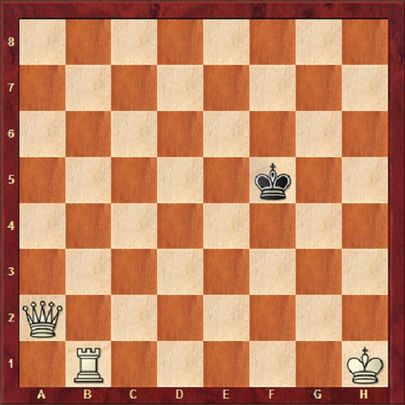

Το πιο συνηθισμένο, σημαντικό και εύκολο ματ είναι με Βασίλισσα και πύργο.
Το σχέδιο είναι να οδηγηθεί ο Βασιλιάς στην τελευταία γραμμή με εναλλάξ κινήσεις της Βασίλισσας και του Πύργου.
Η Βασίλισσα πρέπει να βρίσκεται πίσω από τον Πύργο για να τον υποστηρίζει στην περίπτωση που πλησιάσει ο αμυνόμενος Βασιλιάς.
Με την πρώτη κίνηση του Λευκού, ο Πύργος αποκόβει το μαύρο Βασιλιά στην 5η γραμμή και πίσω.
Η λευκή Βασίλισσα απειλεί τον μαύρο Βασιλιά στην 5η γραμμή και τον αναγκάζει να οπισθοχωρήσει πίσω στην 6η γραμμή.
Με σαχ εναλλάξ του Πύργου και της Βασίλισσας για να μην ξεφύγει ο μαύρος Βασιλιάς προς το κέντρο, οδηγείται στην τελευταία γραμμή.
Κλείνοντας και την τελευταία γραμμή με τον Πύργο γίνεται το τυπικό ματ που φαίνεται στο παρακάτω διάγραμμα.
Το ματ με 2 Πύργους είναι παρόμοιο με το ματ με Βασίλισσα και Πύργο.
Είναι λίγο δυσκολότερο καθώς χρειάζεται προσοχή όταν ο αμυνόμενος Βασιλιάς πλησιάζει τους Πύργους.
Πρώτα αποκόβουμε τον Βασιλιά από την 3η γραμμή και θα τον οδηγήσουμε σταδιακά στην τελευταία.
Όταν ο αμυνόμενος Βασιλιάς πλησιάσει τους Πύργους ο ευκολότερος τρόπος είναι
να τους μεταφέρουμε στην άλλη άκρη της σκακιέρας μακριά από τον αντίπαλο Βασιλιά.
Ο αμυνόμενος Βασιλιάς πλησιάζει τους Πύργους και εφαρμόζουμε πάλι τη μεταφορά των Πύργων στην άλλη πλευρά.
Αν 8.... Ρδ8 τότε ακολουθεί Πβ8#
Το ματ με Βασίλισσα είναι ιδιαίτερα σημαντικό καθώς εμφανίζεται πολύ συχνά σε παρτίδες αρχαρίων σκακιστών και
θέλει ακρίβεια για να κερδίσει η πλευρά με την Βασίλισσα. Ένας βασικός μνημονικός κανόνας είναι ότι δεν κάνουμε
ποτέ σαχ καθώς προσπαθούμε να περιορίσουμε τον αντίπαλο Βασιλιά στην τελευταία γραμμή.
Για να κάνουμε το ματ υπάρχουν 2 στάδια.
Κλείνουμε τον αντίπαλο Βασιλιά από την 3η γραμμή και πίσω και επίσης του αφαιρούμε το τετράγωνο δ4 από την 4η γραμμή.
Μνημονικός κανόνας: παίζουμε τη Βασίλισσα έτσι ώστε αν ήταν Ίππος να απειλεί τον αντίπαλο Βασιλιά.
Αφαιρούμε και το τετράγωνο ε4 στον αντίπαλο Βασιλιά.
Μιμούμαστε τις κινήσεις του Βασιλιά χωρίς να τον απειλούμε με στόχο να του περιορίζουμε την κινητικότητα
Όταν κλείσουμε τον Βασιλιά στην τελευταία γραμμή σταματάμε να μιμούμαστε τις κινήσεις του.
Προσέχουμε να μην παίξουμε 10.Βζ7 γιατί θα γίνει πατ!
Το ματ με Πύργο είναι το πιο δύσκολο αλλά και πιο σπάνιο από τα βασικά ματ που πρέπει να γνωρίζει κάθε αρχάριος σκακιστής.
Για να γίνει το ματ θα πρέπει ο Βασιλιάς σε συνεργασία με τον Πύργο να αποκλείσουν τον Βασιλιά στη γωνία της σκακιέρας.
Πρώτα περιορίζουμε τον αντίπαλο βασιλιά στις 4 τελευταίες γραμμές.
Με τον πύργο περιορίζουμε τον μαύρο βασιλιά.
Κουνάμε τον βασιλιά μόνο όταν δεν μπορεί ο πύργος μας να περιορίσει τον αντίπαλο βασιλιά.
Μία κίνηση αναμονής αναγκάζει να βασιλιά να πάει στη γωνία.